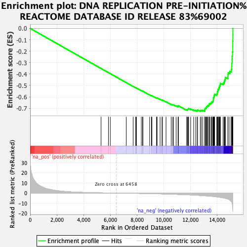
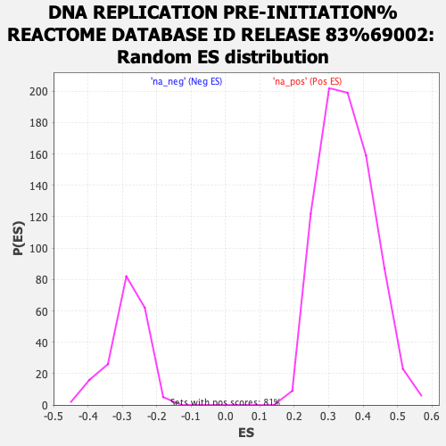

| | | Dataset | MesenvsImmuno_RNASeq_ranks |
| Phenotype | NoPhenotypeAvailable |
| Upregulated in class | na_neg |
| GeneSet | DNA REPLICATION PRE-INITIATION%REACTOME DATABASE ID RELEASE 83%69002 |
| Enrichment Score (ES) | -0.7277825 |
| Normalized Enrichment Score (NES) | -2.5351665 |
| Nominal p-value | 0.0 |
| FDR q-value | 0.0 |
| FWER p-Value | 0.0 |
Table: GSEA Results Summary

Fig 1: Enrichment plot: DNA REPLICATION PRE-INITIATION%REACTOME DATABASE ID RELEASE 83%69002
Profile of the Running ES Score & Positions of GeneSet Members on the Rank Ordered List
| SYMBOL | RANK IN GENE LIST | RANK METRIC SCORE | RUNNING ES | CORE ENRICHMENT | | 1 | PSMD1 | 5314 | 0.226 | -0.3512 | No |
| 2 | ANAPC2 | 5867 | 0.103 | -0.3874 | No |
| 3 | CDC27 | 6006 | 0.078 | -0.3963 | No |
| 4 | PSME3 | 7201 | -0.124 | -0.4750 | No |
| 5 | FZR1 | 7720 | -0.223 | -0.5086 | No |
| 6 | PSMC4 | 7911 | -0.266 | -0.5204 | No |
| 7 | CDC23 | 7930 | -0.269 | -0.5207 | No |
| 8 | ANAPC4 | 7967 | -0.278 | -0.5223 | No |
| 9 | CDC16 | 8331 | -0.365 | -0.5452 | No |
| 10 | KPNB1 | 8424 | -0.390 | -0.5501 | No |
| 11 | RPS27A | 8450 | -0.395 | -0.5505 | No |
| 12 | ANAPC1 | 8952 | -0.525 | -0.5821 | No |
| 13 | RPA1 | 9088 | -0.563 | -0.5893 | No |
| 14 | KPNA1 | 9127 | -0.573 | -0.5901 | No |
| 15 | PSMD5 | 9468 | -0.680 | -0.6105 | No |
| 16 | ANAPC16 | 9499 | -0.690 | -0.6104 | No |
| 17 | KPNA6 | 9509 | -0.692 | -0.6088 | No |
| 18 | PSMD3 | 9736 | -0.777 | -0.6214 | No |
| 19 | UBE2D1 | 9880 | -0.828 | -0.6284 | No |
| 20 | PSMD8 | 9916 | -0.840 | -0.6281 | No |
| 21 | POLE | 10182 | -0.939 | -0.6428 | No |
| 22 | MCM8 | 10570 | -1.093 | -0.6651 | No |
| 23 | UBB | 10689 | -1.145 | -0.6694 | No |
| 24 | CDC26 | 10741 | -1.170 | -0.6692 | No |
| 25 | UBC | 10939 | -1.264 | -0.6784 | No |
| 26 | PSMD12 | 11082 | -1.325 | -0.6837 | No |
| 27 | PSMD2 | 11084 | -1.326 | -0.6797 | No |
| 28 | PSMC5 | 11112 | -1.343 | -0.6774 | No |
| 29 | POLA1 | 11717 | -1.631 | -0.7124 | No |
| 30 | MCM10 | 11789 | -1.671 | -0.7120 | No |
| 31 | CDC6 | 11816 | -1.690 | -0.7085 | No |
| 32 | ANAPC5 | 11845 | -1.707 | -0.7052 | No |
| 33 | PSMF1 | 11875 | -1.726 | -0.7018 | No |
| 34 | PSMB7 | 12026 | -1.814 | -0.7062 | No |
| 35 | PSMC1 | 12253 | -1.984 | -0.7151 | No |
| 36 | PSMD10 | 12407 | -2.091 | -0.7188 | No |
| 37 | PSMB5 | 12517 | -2.167 | -0.7194 | No |
| 38 | PSMA1 | 12543 | -2.193 | -0.7143 | No |
| 39 | PSMD6 | 12747 | -2.366 | -0.7205 | Yes |
| 40 | CDC7 | 12821 | -2.428 | -0.7179 | Yes |
| 41 | RPA3 | 12933 | -2.531 | -0.7176 | Yes |
| 42 | PSMD13 | 13082 | -2.685 | -0.7191 | Yes |
| 43 | UBA52 | 13090 | -2.697 | -0.7113 | Yes |
| 44 | ANAPC7 | 13096 | -2.704 | -0.7034 | Yes |
| 45 | POLE2 | 13147 | -2.740 | -0.6983 | Yes |
| 46 | PSMA7 | 13200 | -2.786 | -0.6932 | Yes |
| 47 | MCM7 | 13219 | -2.805 | -0.6859 | Yes |
| 48 | POLE3 | 13280 | -2.857 | -0.6811 | Yes |
| 49 | MCM5 | 13318 | -2.905 | -0.6746 | Yes |
| 50 | CDK2 | 13406 | -2.993 | -0.6713 | Yes |
| 51 | PRIM2 | 13411 | -2.997 | -0.6623 | Yes |
| 52 | PSMB2 | 13467 | -3.054 | -0.6566 | Yes |
| 53 | PSMC3 | 13560 | -3.166 | -0.6530 | Yes |
| 54 | MCM4 | 13596 | -3.200 | -0.6456 | Yes |
| 55 | UBE2S | 13673 | -3.310 | -0.6405 | Yes |
| 56 | MCM2 | 13714 | -3.368 | -0.6328 | Yes |
| 57 | MCM6 | 13727 | -3.385 | -0.6233 | Yes |
| 58 | ANAPC10 | 13731 | -3.391 | -0.6131 | Yes |
| 59 | CDC45 | 13752 | -3.419 | -0.6039 | Yes |
| 60 | PSMD11 | 13783 | -3.454 | -0.5954 | Yes |
| 61 | RPA2 | 13802 | -3.479 | -0.5859 | Yes |
| 62 | PSMD9 | 13825 | -3.498 | -0.5767 | Yes |
| 63 | PSMD14 | 13984 | -3.783 | -0.5756 | Yes |
| 64 | UBE2C | 14022 | -3.851 | -0.5662 | Yes |
| 65 | PSMD7 | 14029 | -3.858 | -0.5548 | Yes |
| 66 | POLE4 | 14071 | -3.936 | -0.5455 | Yes |
| 67 | PSMC6 | 14079 | -3.952 | -0.5338 | Yes |
| 68 | ANAPC11 | 14136 | -4.055 | -0.5252 | Yes |
| 69 | DBF4 | 14166 | -4.109 | -0.5145 | Yes |
| 70 | PSMB6 | 14198 | -4.173 | -0.5038 | Yes |
| 71 | PSMA4 | 14233 | -4.228 | -0.4931 | Yes |
| 72 | MCM3 | 14255 | -4.267 | -0.4814 | Yes |
| 73 | PSMA2 | 14457 | -4.730 | -0.4803 | Yes |
| 74 | POLA2 | 14533 | -4.912 | -0.4702 | Yes |
| 75 | UBE2E1 | 14561 | -4.989 | -0.4567 | Yes |
| 76 | PSMB3 | 14612 | -5.115 | -0.4444 | Yes |
| 77 | PSMB1 | 14628 | -5.164 | -0.4296 | Yes |
| 78 | PSMA3 | 14819 | -5.889 | -0.4241 | Yes |
| 79 | PSMC2 | 14822 | -5.915 | -0.4062 | Yes |
| 80 | PRIM1 | 14837 | -5.979 | -0.3888 | Yes |
| 81 | GMNN | 14966 | -6.904 | -0.3762 | Yes |
| 82 | PSMD4 | 15077 | -8.499 | -0.3574 | Yes |
| 83 | CDT1 | 15106 | -9.036 | -0.3316 | Yes |
| 84 | PSMB4 | 15113 | -9.188 | -0.3039 | Yes |
| 85 | PSMA5 | 15135 | -10.148 | -0.2743 | Yes |
| 86 | PSMA6 | 15141 | -10.422 | -0.2427 | Yes |
| 87 | PSMB10 | 15161 | -12.009 | -0.2072 | Yes |
| 88 | PSMB8 | 15186 | -15.769 | -0.1606 | Yes |
| 89 | PSME1 | 15187 | -16.251 | -0.1108 | Yes |
| 90 | PSME2 | 15191 | -17.951 | -0.0561 | Yes |
| 91 | PSMB9 | 15193 | -18.359 | 0.0000 | Yes |
Table: GSEA details [plain text format]

Fig 2: DNA REPLICATION PRE-INITIATION%REACTOME DATABASE ID RELEASE 83%69002: Random ES distribution
Gene set null distribution of ES for DNA REPLICATION PRE-INITIATION%REACTOME DATABASE ID RELEASE 83%69002